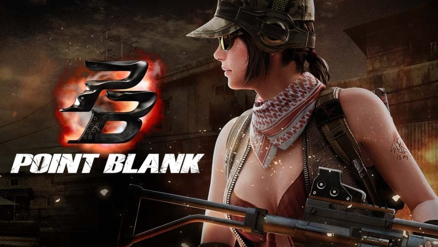

My hobbies and my favorites
Hello My name is Allen Daniel Engbino and my hobbies are playing online games, basketball and watching anime. My favorite color is black, my favorite food is sisig, my favorite game is Dota 2 and Valorant, and my favorite anime is Fairy tail.
I first played dota 2 when I was 9 years old since the first release of it I was stunned by the game graphics and I like it so much to the extent that I'll even use my pocket money just to play it in computer shop, and my parents is always mad at me because I keep spending my money on a computer game just to play dota 2 but I can't help it since the game was good and I want to play it as much as I want. Dota 2 is not the first game that I liked it was point blank and it was the very first FPS game that i played eversince and it was cool since I was good at this game.
Then now one of my favorite game is Valorant, it is a very good FPS game to play since I enjoyed it when a character got skills and can shoot guns at the same time, it is good since it was like a random fantasy thing that people thinks that will never happen in real life, I mean if you see those type of games you can't help but get curious on how do you play games like that, there's a lot of people addicted to it now and it's hard to rank up with it that's why it's good and challenging at the same time
My Ambitions in life
I want to become a game developer in the future and I want to create a RPG that will enable a player to build their own skills that they want and fight monsters that is above humanity level and I want it to be an open world game so many people will play it and have a party with their friends so they can enjoy it together, at first when I was young I want to become accountant but when I saw a Role-playing-game like Genshin Impact, I want to make it more like a real open world where everyone can roam around the map and play like they're the ones who's controlling the character, that's my dream for now and once I achieve it I'll go for more and create more develop more games that many people would love to play.

Favorite Dota 2 Character
Pudge
In the Fields of Endless Carnage, far to the south of Quoidge, a corpulent figure works tirelessly through the night--dismembering, disembowelling, piling up the limbs and viscera of the fallen that the battlefield might be clear by dawn. In this cursed realm, nothing can decay or decompose; no corpse may ever return to the earth from which it sprang, no matter how deep you dig the grave. Flocked by carrion birds who need him to cut their meals into beak-sized chunks, Pudge the Butcher hones his skills with blades that grow sharper the longer he uses them. Swish, swish, thunk. Flesh falls from the bone; tendons and ligaments part like wet paper. And while he always had a taste for the butchery, over the ages, Pudge has developed a taste for its byproduct as well. Starting with a gobbet of muscle here, a sip of blood there...before long he was thrusting his jaws deep into the toughest of torsos, like a dog gnawing at rags. Even those who are beyond fearing the Reaper, fear the Butcher.
Favorite Valorant Agent
Sage
Ling Ying Wei is a Radiant monk coming from China. Going on to become an agent for the VALORANT Protocol as its seventh recruit, "Sage", Ling was able to work her way quickly up the ranks, with the Protocol's superiors identifying natural leadership qualities in her. Sage is currently active in VALORANT's radiant agent recruitment and training, interacting with multiple new radiants upon recruitment and taking the lead on its radiant training program.
Point Blank

Point Blank is a fast-paced online first-person shooter, and is similar in terms of gameplay to Counter-Strike. It also features destructible and dynamic environments, as well as deeper character and skill customisation options.
In Point Blank, players join either the Free Rebels or CT-Force team (the Free Rebels are based on the Terrorists from
Counter-Strike, while CT-Force is based on the Counter-Terrorists). Each team attempts to complete their mission objective and/or eliminate the opposing team. Each round starts with the two teams spawning simultaneously, usually at opposite ends of the map from each other.
A player can choose to play as one of four different default character models (Acid and Keen Eyes for CT-Force, and Red Bull and Tarantula for the Free Rebels). There are four purchasable deluxe character models: Fennec and Pit Viper for CT-Force or Cheshire and Shadow for
the Free Rebels. Players are generally given a few seconds before the round begins, or before respawning, to change weapons and/or equipment.
For additional Information
Please Contact Call 0963912574